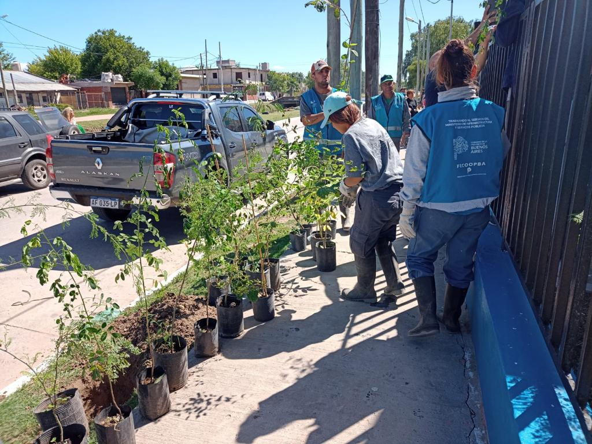
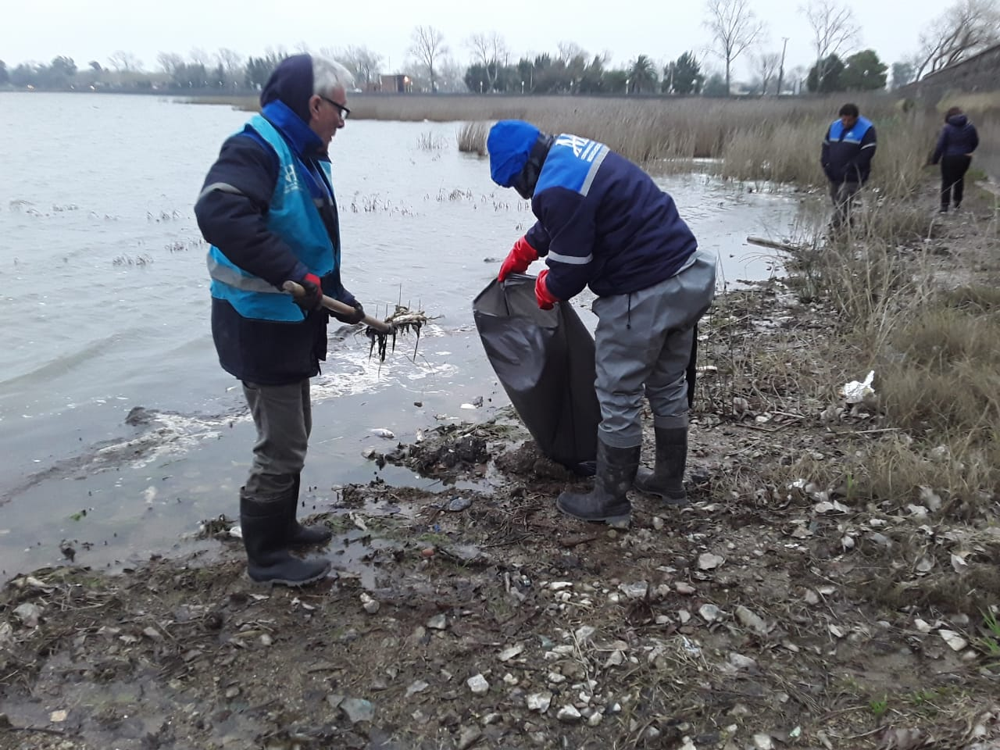
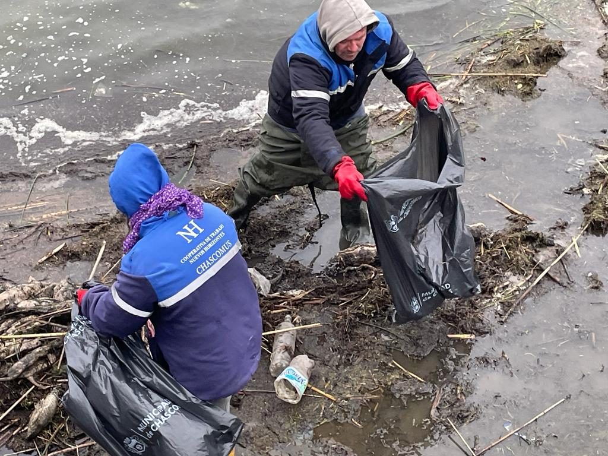
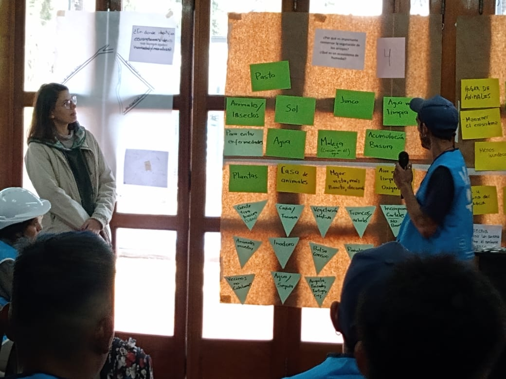
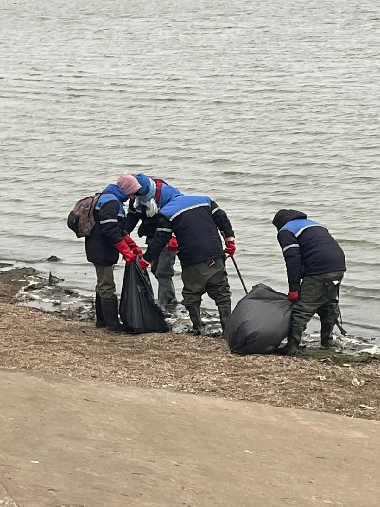

Capacitación: Taller de Riesgo Hídrico
El 14 de Febrero se brindó una capacitación a las cooperativas de trabajo de las ciudades de La Plata y Ensenada. El Taller de riesgo Hídrico estuvo a cargo de la Dirección de Monitoreo Hidrico en conjunto con la Dirección de Mantenimiento. Se contó con la presencia y exposición del Subsecretario de Recursos Hídricos Guillermo Jelinsky




